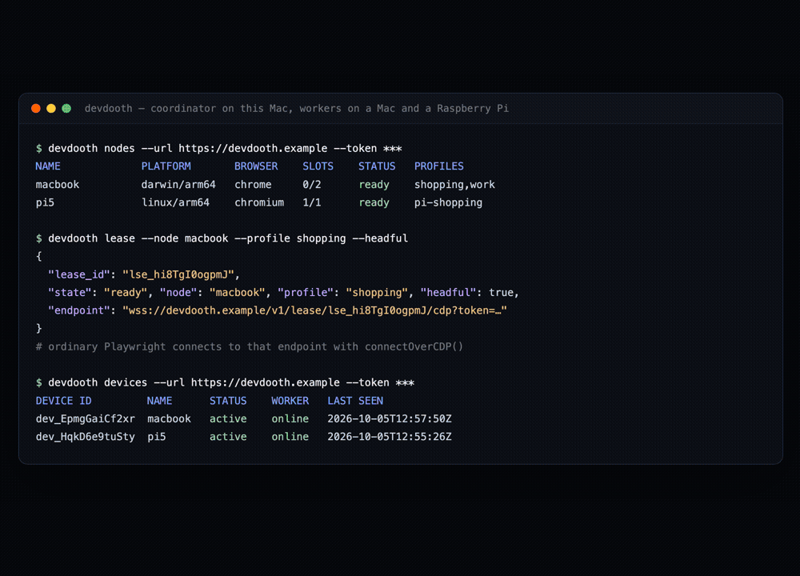
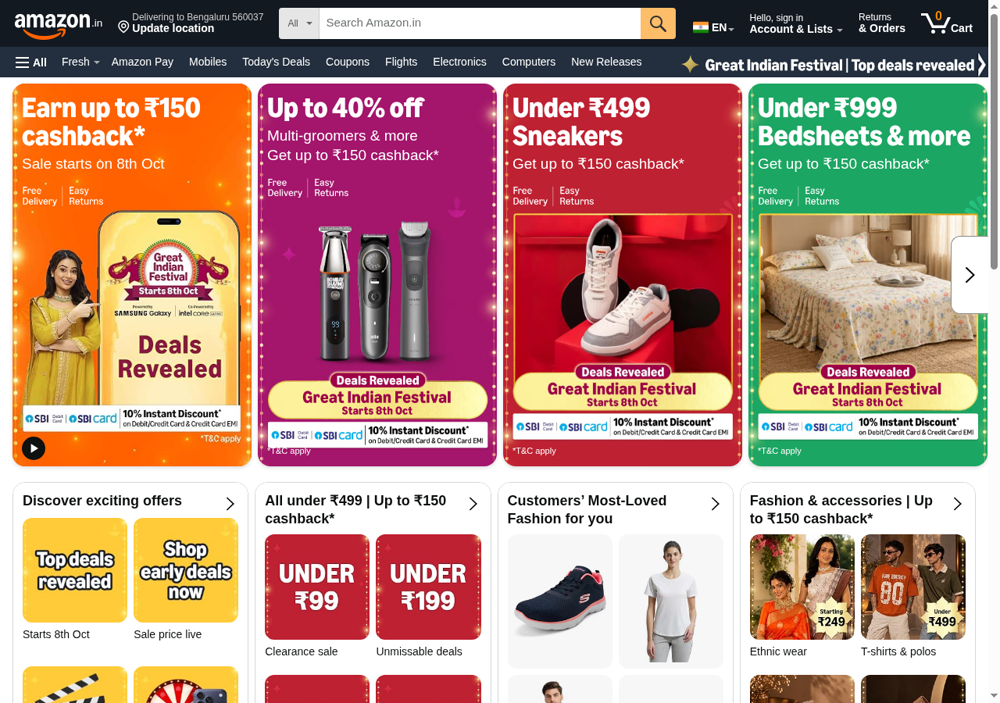
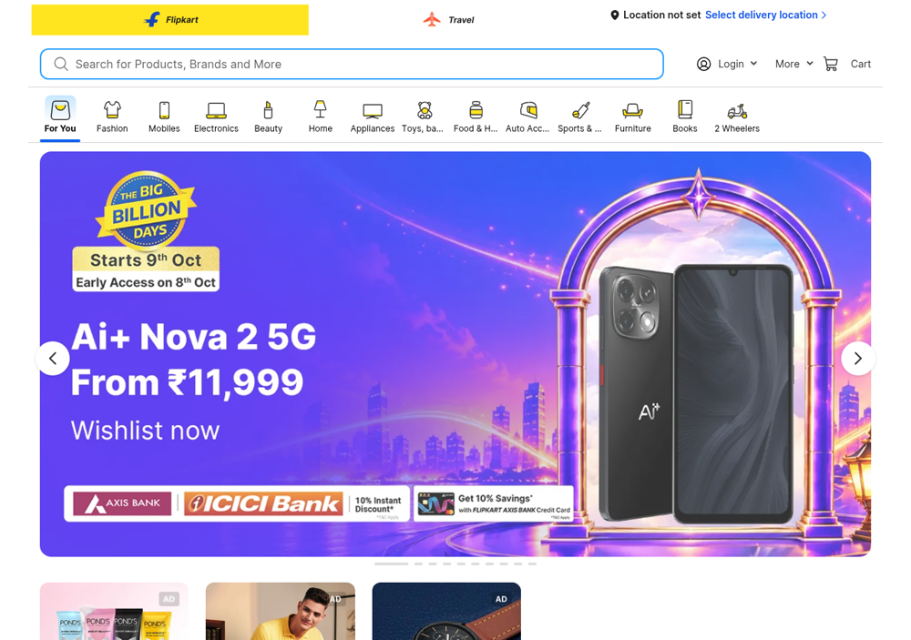
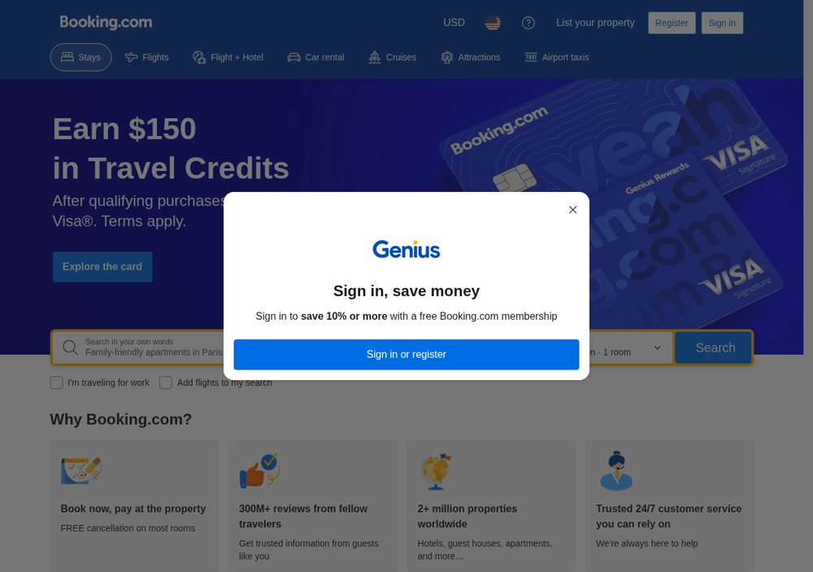
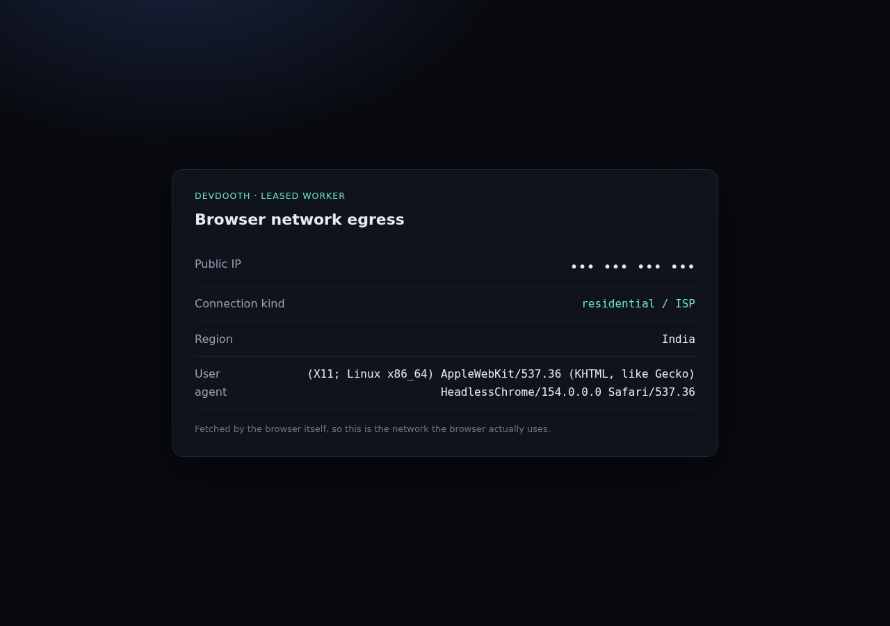
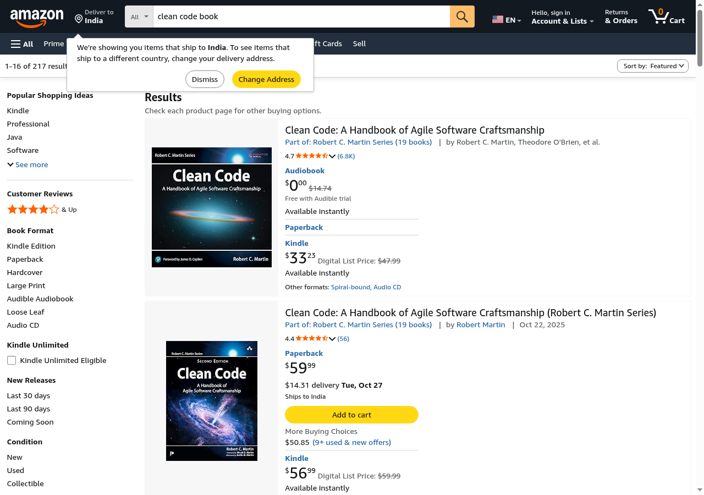
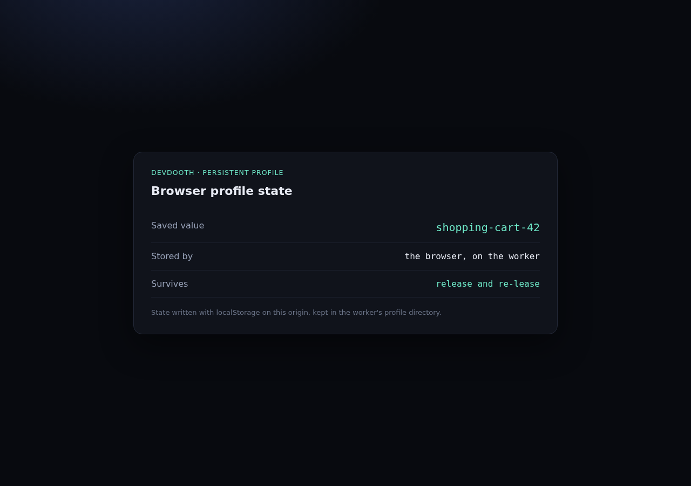
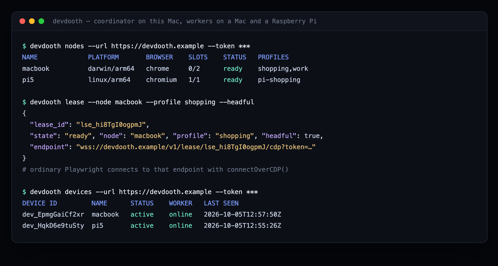

Self-hosted browser infrastructure
Lease a real browser on hardware you already own.
Devdooth turns a Mac, a Linux box, or a Raspberry Pi into a pool of real Chrome browsers for your agents and scripts. Workers dial out, so there are no inbound ports to open. Every lease is a standard CDP endpoint, and browser profiles never leave the machine.
# one static binary: coordinator, worker, and CLI
curl -fsSL https://raw.githubusercontent.com/unnipv/devdooth/main/scripts/install.sh | sh
Why Devdooth
A browser pool on machines you control
Six properties that let Devdooth drop into an existing setup without new infrastructure.
Outbound-only workers
Workers hold one outgoing WebSocket to the coordinator. NAT, firewalls, and CGNAT stay untouched — nothing listens on the internet.
Standard CDP endpoints
Each lease is a browser-level CDP WebSocket. Playwright, Puppeteer, or any CDP client connects in one line — no SDK to adopt.
Profiles stay local
Named Chrome profiles live on the worker's disk and persist across leases. Cookies and logins never move between machines.
Capability routing
Request a lease by node, profile, or headful mode. Hard filters are applied first, then the least-loaded matching worker wins.
Composes with your agents
Devdooth leases browsers; it does not drive them. Playwright MCP, browser-use, or your own CDP code does the driving.
Honest security
Loopback-bound debug ports, hashed device tokens, per-lease credentials, worker-enforced TTLs — and a threat model that says what it will not protect.
How it works
Dial-out workers, a thin coordinator
The coordinator is a control plane and a byte-level relay. It never parses CDP traffic.
Agent or Playwright
Requests a lease over HTTP, then speaks plain CDP on the returned endpoint.
Coordinator
Node registry, leases, scheduling, and auth. Relays frames without inspecting them.
Worker
Launches Chrome with a loopback debug port, keeps profiles on local disk, tunnels everything outbound.
A worker opens one outbound control WebSocket. When a lease arrives, it launches a browser and opens a second outbound tunnel that carries CDP frames between the caller and that browser. Message boundaries are preserved and buffers are bounded: a stalled peer is dropped rather than queued without limit.
Demo
See it working
Captured from a real run: a coordinator on a Mac, with workers on that Mac and on a Raspberry Pi 5 behind a home router. The Pi has no inbound ports.

Marketplaces and travel
Loaded over the Pi's own connection — no proxy, no datacenter IP.



The machine's own network
What the leased browser reports about itself.


A profile that persists
One profile, two leases, a brand-new browser process each time.



Sites that aggressively challenge automation are left alone. Devdooth is not an anti-bot or CAPTCHA-bypass product — it uses the network and profile of whichever machine you chose, and nothing more. Some sites refuse headless Chromium on any IP address; those simply are not shown here.
Quickstart
Up in three steps
Run a coordinator, enroll a machine, lease a browser. Everything below uses the binary installed by the one-liner above.
1 · Start the coordinator
# on any host the workers can reach devdooth coordinator --addr :8080 --store devdooth.db # a generated admin token is printed once — save it
2 · Enroll and join a machine
# on the coordinator host: mint a single-use enrollment token devdooth enroll-token --url http://localhost:8080 --token <admin-token> --label macbook # on the Mac / Pi / Linux box devdooth join --coordinator http://192.168.1.10:8080 \ --enroll-token <enrollment-token> --name macbook devdooth worker --coordinator http://192.168.1.10:8080 --profiles shopping,work
The device identity is stored on the worker, so restarts need no token; the
coordinator stores only a hash. Inspect or revoke devices with
devdooth devices.
3 · Lease a browser
devdooth lease --url http://192.168.1.10:8080 --token <admin-token> \
--profile shopping --headful --ttl 1800
# → prints JSON, including "endpoint": "ws://192.168.1.10:8080/v1/lease/lse_x/cdp?token=…"
Drive it with Playwright
from playwright.async_api import async_playwright async with async_playwright() as p: browser = await p.chromium.connect_over_cdp(session.endpoint) page = browser.contexts[0].pages[0] await page.goto("https://example.com")
import { chromium } from 'playwright-core'; const browser = await chromium.connectOverCDP(session.endpoint); const page = browser.contexts()[0].pages()[0]; await page.goto('https://example.com');
session.endpoint stands for the endpoint printed by
devdooth lease — there is no SDK. Copy the value into
your own variable and hand it to any CDP client.
Agents
Drive it from an AI agent
Devdooth ships no browsing tools of its own. devdooth mcp
leases a browser, starts the upstream Playwright MCP against it, and releases the
lease when the server exits.
{
"mcpServers": {
"devdooth": {
"command": "/absolute/path/to/devdooth",
"args": ["mcp", "--url", "http://192.168.1.10:8080", "--token", "<admin-token>",
"--node", "macbook", "--profile", "shopping", "--headful"]
}
}
}
Works with Claude Code, Cursor, VS Code, and other MCP clients — run
command -v devdooth to fill in the binary path. The default
launcher runs npx -y @playwright/mcp, so Node.js (with
npx) must be available where the MCP client runs. Then just
ask the agent to browse: it drives a browser on your machine, with that profile's
logins and that machine's network.
from browser_use import Browser browser = Browser(cdp_url=session.endpoint)
Using a coding agent for the setup itself? Point it at AGENTS.md — it contains a copy-paste task that builds, starts, leases, and verifies the whole system.
Profiles
Log in once, keep the profile
Profiles are named, worker-local Chrome directories. Declare them when the worker starts, then request them by name at lease time.
- Profiles live at
~/.devdooth/profiles/<name>on the worker;--data-dirrelocates them. - One browser at a time opens a profile — a concurrent request fails explicitly instead of corrupting it.
- Profile data never leaves or moves between machines. A profile-only request matches any online worker advertising that name; add
--nodeto pin a specific machine. - Complete a login or MFA once in headful mode, and every later lease on that profile reuses it.
devdooth worker --coordinator ... --profiles shopping,work
devdooth lease --url http://192.168.1.10:8080 --token <admin-token> \
--node macbook --profile shopping --headful
# cookies and localStorage survive release and re-lease
Security
An honest security model
A leased browser may be logged into your email, bank, or internal services. Devdooth treats raw browser access as the powerful — and dangerous — capability it is.
What it does
- Workers are outbound-only; each browser's debug port binds to loopback.
- Separate admin and worker credentials. Equal-length tokens are compared with a full scan; enrolled device tokens are authenticated by hash lookup.
- Enrollment tokens are single-use and expiring, and only their hashes are stored.
- Per-lease credentials are bounded by the lease TTL, which the worker enforces even if the coordinator is gone.
- Buffers are bounded and stalled peers are disconnected; the relay never logs CDP payloads.
What it does not do
- Protect you from a compromised coordinator.
- Make an authorized CDP client safe — it can read local files and reach local-network services.
- Treat CDP filtering as a security boundary.
- Share one coordinator across untrusted owners — Devdooth is single-owner.
For real isolation, run workers under a separate OS account, container, or VM, and
advertise only the profiles you are willing to lend. Terminate TLS at a reverse proxy
for non-local deployments and set --public-url https://….
The full threat model is
in the repo.
Reference
CLI and HTTP API
Everything the binary and the coordinator expose, on one page.
CLI
| Command | Purpose |
|---|---|
devdooth coordinator | Run the control plane and relay. |
devdooth enroll-token | Mint a single-use enrollment token. |
devdooth join | Enroll this machine and store its device identity. |
devdooth worker | Connect outbound and lend this machine's browsers. |
devdooth nodes | List connected workers and capabilities. |
devdooth devices | List or revoke enrolled devices. |
devdooth lease / release | Acquire or release a browser. |
devdooth pause / resume | Hand a headful session to a human, then back. |
devdooth mcp | Lease a browser and supervise Playwright MCP. |
HTTP API
| Method | Path | Purpose |
|---|---|---|
| GET | /healthz | Liveness. |
| GET | /v1/nodes | Connected workers and capabilities. |
| POST | /v1/leases | Acquire a browser. |
| GET | /v1/leases/{id} | Lease state. |
| DELETE | /v1/leases/{id} | Release, waiting for teardown. |
| POST | /v1/leases/{id}/pause | Detach the controller for human take-over. |
| POST | /v1/leases/{id}/resume | Allow a controller to attach again. |
| GET | /v1/lease/{id}/cdp | CDP WebSocket endpoint. |
| POST | /v1/enroll-tokens | Mint an enrollment token. |
| POST | /v1/enroll | Redeem a token for a device identity. |
| GET | /v1/devices | List enrolled devices. |
| DELETE | /v1/devices/{id} | Revoke a device and drop its connection. |
Limitations
- Chromium-family browsers only (CDP).
- One browser process per lease; no multi-context packing.
- Single owner; no ACLs.
- Workers use installed browsers — Devdooth downloads none.
- Human take-over is cooperative (pause/resume), not enforced ownership.
- Remote uploads and downloads vary by browser; verify them per use case.